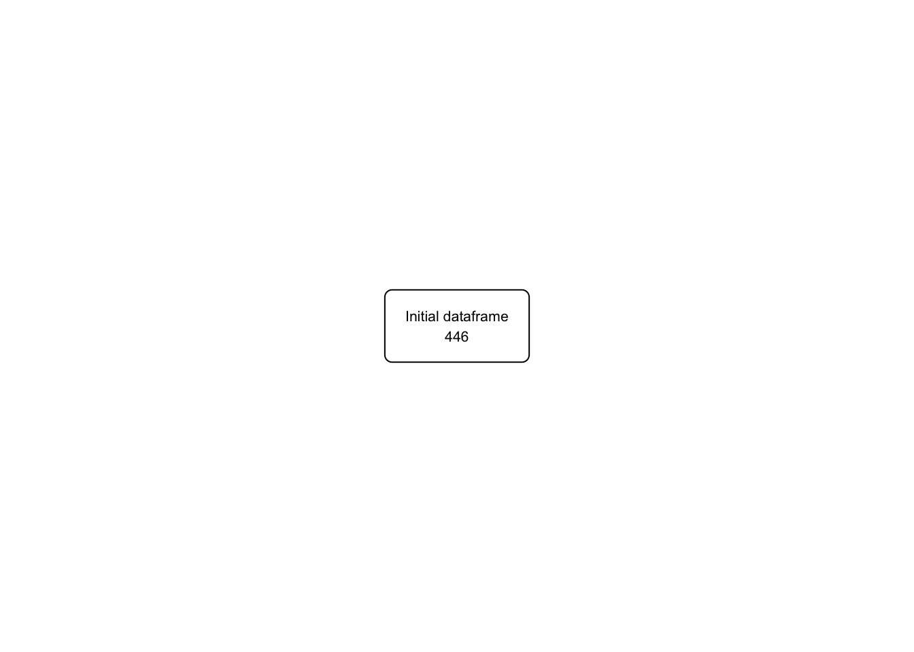

# Simulate the data
tibble::tibble(
id = 1:446,
inclusion_crit = rep("No", 446),
exclusion_crit = c(rep("No", 274), rep("Yes", 172)),
withdrew_consent = c(rep("No", 257), rep("Yes", 17), rep(NA, 172)),
lost_to_follow_up = c(rep("No", 255), rep("Yes", 2), rep(NA, 189)),
other_reasons = c(rep("No", 250), rep("Yes", 5), rep(NA, 191)),
group = c(rep("Placebo", 46), rep("Upa 7.5 mg QD", 47), rep("Upa 15 mg QD", 49), rep("Upa 30 mg QD", 52), rep("Upa 45 mg QD", 56), rep(NA, 196)),
completed = c(rep("Yes", 41), rep("No", 5),
rep("Yes", 45), rep("No", 2),
rep("Yes", 45), rep("No", 4),
rep("Yes", 46), rep("No", 6),
rep("Yes", 50), rep("No", 6),
rep(NA, 196)),
adverse_event = c(rep("No", 41), rep("Yes", 3), rep("No", 2),
rep("No", 45), rep("Yes", 1), rep("No", 1),
rep("No", 45), rep("Yes", 2), rep("No", 2),
rep("No", 46), rep("Yes", 4), rep("No", 2),
rep("No", 50), rep("Yes", 4), rep("No", 2),
rep(NA, 196)),
lack_of_efficacy = c(
rep("No", 44), rep("Yes", 2),
rep("No", 46), rep("Yes", 1),
rep("No", 47), rep("Yes", 1), rep("No", 1),
rep("No", 50), rep("Yes", 1), rep("No", 1),
rep("No", 54), rep("Yes", 2),
rep(NA, 196)),
other_reason_withdraw = c(
rep("No", 46),
rep("No", 47),
rep("No", 48), rep("Yes", 1),
rep("No", 51), rep("Yes", 1),
rep("No", 56),
rep(NA, 196)),
itt = c(rep("Yes", 250), rep("No", 196)),
reason_itt = c(rep(NA, 250), rep("No response", 196)),
pp = c(rep("Yes", 250), rep("No", 196)),
reason_pp = c(rep(NA, 250), rep("No response", 196))
) -> upa
upa |>
mutate(group = factor(group, ordered = TRUE,
levels = c("Placebo", "Upa 7.5 mg QD", "Upa 15 mg QD", "Upa 30 mg QD", "Upa 45 mg QD"))) -> upa2Building a CONSORT diagram with the {flowchart} package for Upa Phase 3 for UC
Example
We will build a 2nd example dataset for the {flowchart} package. This dataset will be from the phase 3 Upa study for UC. The data will be simulated to match the structure of the data from the Upa study to reproduce the CONSORT diagram. Original paper here: https://www.gastrojournal.org/article/S0016-5085(20)30241-9/fulltext?referrer=https%3A%2F%2Fpubmed.ncbi.nlm.nih.gov%2F
Our goal is to replicate Figure 1.
NOTE: updates since the original example package
- added b0x_corners = “sharp” to the fc_draw() function to make the boxes have sharp corners
- added the function fc_view(“fc”) to view the flowchart object table.
- more comments in the issues section of https://github.com/bruigtp/flowchart/issues, search for ‘higgi13425’ and look at other updates.
- Look at package for news and updates.
Dataset construction will be as follows:
446 participants will be simulated and assessed for eligibility
196 participants will be excluded
250 participants will be randomized to the study
46-56 participants will be assigned to the 5 treatment groups
2-6 from each arm will discontinue treatment
41-50 from each arm will complete the study
We will use the data provided in Figure 1, and will not use any patient identifying data.
The variables in the dataset should include:
id: participant identifier
inclusion_crit: inclusion criteria met (Yes/No)
exclusion_crit: exclusion criteria met (Yes/No) Other reasons for exclusion, including:
withdrew_consent: withdrew consent (Yes/No)
lost_to_follow_up: lost to follow-up (Yes/No)
other_reasons: other reasons for exclusion (Yes/No)
group (treatment group)
completed: completed the study (Yes/No) Reasons for non-completion, including:
adverse_event (Yes/No)
lack_of_efficacy (Yes/No)
other_reasons (Yes/No)
itt: intention to treat (Yes/No)
reason_itt: reason for not being included in the intention to treat analysis
pp: per protocol (Yes/No)
reason_pp: reason for not being included in the per protocol analysis
Now we will create the flowchart using the {flowchart} package. We will start with the opening box.
upa_fc <- upa2 |>
as_fc()
str(upa_fc, max.level = 1)List of 2
$ data: tibble [446 × 15] (S3: tbl_df/tbl/data.frame)
$ fc : tibble [1 × 17] (S3: tbl_df/tbl/data.frame)
- attr(*, "class")= chr "fc"upa_fc |>
fc_draw()
Branching
Now we can add branching to the flowchart to document the exclusions.
upa2 |>
as_fc(label = "Patients assessed for eligibility") |>
fc_filter(!is.na(group), label = "Randomized", show_exc = TRUE) |>
fc_draw()
Splitting into Groups (Treatment Arms)
Then we can start to split the branches to treatment arms (groups).
upa2 |>
as_fc(label = "Patients assessed for eligibility") |>
fc_filter(!is.na(group), label = "Randomized participants\nAssigned to therapy", show_exc = TRUE, label_exc = "Excluded patients" ) |>
fc_split(group) |>
fc_draw()
Filtering for Completers
Now let’s filter for completers but break this up so that we can also print out the fc object.
upa2 |>
as_fc(label = "Patients assessed for eligibility") |>
fc_filter(!is.na(group), label = "Randomized participants\nAssigned to therapy", show_exc = TRUE, label_exc = "Excluded patients" ) |>
fc_split(group) |>
fc_filter(completed == "Yes", label = "Completed Study", show_exc = TRUE, label_exc = "Withdrew\nfrom Study") -> upa_fc4
upa_fc4$fc# A tibble: 18 × 17
id x y n N perc text type group
<int> <dbl> <dbl> <int> <int> <chr> <chr> <chr> <chr>
1 1 0.5 0.8 446 446 100 "Patient… init <NA>
2 2 0.5 0.6 250 446 56.05 "Randomi… filt… <NA>
3 3 0.65 0.7 196 446 43.95 "Exclude… excl… <NA>
4 4 0.1 0.4 46 250 18.4 "Placebo… split Plac…
5 5 0.3 0.4 47 250 18.8 "Upa 7.5… split Upa …
6 6 0.5 0.4 49 250 19.6 "Upa 15 … split Upa …
7 7 0.7 0.4 52 250 20.8 "Upa 30 … split Upa …
8 8 0.9 0.4 56 250 22.4 "Upa 45 … split Upa …
9 9 0.1 0.2 41 46 89.13 "Complet… filt… Plac…
10 10 0.15 0.3 5 46 10.87 "Withdre… excl… Plac…
11 11 0.5 0.2 45 49 91.84 "Complet… filt… Upa …
12 12 0.55 0.3 4 49 8.16 "Withdre… excl… Upa …
13 13 0.7 0.2 46 52 88.46 "Complet… filt… Upa …
14 14 0.75 0.3 6 52 11.54 "Withdre… excl… Upa …
15 15 0.9 0.2 50 56 89.29 "Complet… filt… Upa …
16 16 0.95 0.3 6 56 10.71 "Withdre… excl… Upa …
17 17 0.3 0.2 45 47 95.74 "Complet… filt… Upa …
18 18 0.35 0.3 2 47 4.26 "Withdre… excl… Upa …
# ℹ 8 more variables: just <chr>, text_color <chr>,
# text_fs <dbl>, text_fface <dbl>, text_ffamily <lgl>,
# text_padding <dbl>, bg_fill <chr>, border_color <chr>upa_fc4 |>
fc_draw()
the next steps - improved exclusion labels.
To do -
Provide more detailed labels for the exclusions - use ‘withdrew consent’, ‘lost to follow-up’, ‘other reasons’ Add the discontinued reasons to the flowchart for each group -‘adverse event’, ‘lack of efficacy’, ‘other reasons’
Modify exclusions for more detailed labels
Let’s create the multiline text for the exclusions before randomization.
text_exc <- paste0(
sum(upa$exclusion_crit == "Yes",
upa$withdrew_consent == "Yes",
upa$lost_to_follow_up == "Yes",
upa$other_reasons == "Yes", na.rm = TRUE),
" patients excluded\n",
" ",
sum(upa$exclusion_crit == "Yes", na.rm = TRUE),
" met exclusion criteria\n",
" ",
sum(upa$withdrew_consent == "Yes", na.rm = TRUE),
" withdrew their consent\n",
" ",
sum(upa$lost_to_follow_up == "Yes", na.rm = TRUE),
" were lost to follow up\n",
" ",
sum(upa$other_reasons == "Yes", na.rm = TRUE),
" were excluded for other reasons"
)
text_exc[1] "196 patients excluded\n 172 met exclusion criteria\n 17 withdrew their consent\n 2 were lost to follow up\n 5 were excluded for other reasons"Now let’s add this multiline text for exclusions to the flowchart.
upa2 |>
as_fc(label = "Patients assessed for eligibility") |>
fc_filter(!is.na(group), label = "Randomized participants\nAssigned to therapy", show_exc = TRUE, label_exc = "Excluded patients" ) |>
fc_modify( #modifying only box 3 - exclusions
~ . |>
dplyr::mutate(
text = ifelse(id ==3, text_exc, text),
just = ifelse(id == 3, "left", "center"),
x = ifelse(id == 3, x + 0.11, x)
)
) |>
fc_split(group) |>
fc_filter(completed == "Yes", label = "Completed Study", show_exc = TRUE, label_exc = "Withdrew\nfrom Study") |>
fc_draw()Problems
Don’t know the ids of the Withdrew from Study boxes? how would I find these out? Is there a way to look at the fc table? Is it 10,12,14,16,18? the fc portion of the list seems to have only one row? why is that? Shouldn’t it have rows for each id of each box? How do I see the full table? how do I control order of arms in fc_split - these should be in order by dose from placebo on left to the highest dose on right. Are these alphbetical ordered? Should I make group into an ordered factor to address this? For a SMART study (sequential multiple assignment randomized trial) - can I use fc_split to split by the first randomization and then again for the second randomization? How would I do this? Would I need to create a new group2 variable for this second randomization? When the withdrawal reasons re multiple, and the box is tall, is there an option to push the completed boxes lower down the page so that there is enough space for the withdrawal reasons?
Next step
let’s add the withdrawal reasons to the flowchart for each group -‘adverse event’, ‘lack of efficacy’, ‘other reasons’
Create the multiline text for the withdrawal reasons.
upa_p <- upa2 |>
filter(group == "Placebo")
text_wd <- paste0(
sum(upa_p$completed == "No", na.rm = TRUE),
" patients excluded\n",
" ",
sum(upa_p$adverse_event == "Yes", na.rm = TRUE),
" adverse event\n",
" ",
sum(upa_p$lack_of_efficacy == "Yes", na.rm = TRUE),
" lack of efficacy\n",
" ",
sum(upa_p$other_reason_withdraw == "Yes", na.rm = TRUE),
" other"
)
text_wd[1] "5 patients excluded\n 3 adverse event\n 2 lack of efficacy\n 0 other"Now for Upa 7.5 mg QD
upa_7 <- upa2 |>
filter(group == "Upa 7.5 mg QD")
text_wd2 <- paste0(
sum(upa_7$completed == "No", na.rm = TRUE),
" patients excluded\n",
" ",
sum(upa_7$adverse_event == "Yes", na.rm = TRUE),
" adverse event\n",
" ",
sum(upa_7$lack_of_efficacy == "Yes", na.rm = TRUE),
" lack of efficacy\n",
" ",
sum(upa_7$other_reason_withdraw == "Yes", na.rm = TRUE),
" other"
)
text_wd2[1] "2 patients excluded\n 1 adverse event\n 1 lack of efficacy\n 0 other"Now for Upa 15 mg QD
upa_15 <- upa2 |>
filter(group == "Upa 15 mg QD")
text_wd3 <- paste0(
sum(upa_15$completed == "No", na.rm = TRUE),
" patients excluded\n",
" ",
sum(upa_15$adverse_event == "Yes", na.rm = TRUE),
" adverse event\n",
" ",
sum(upa_15$lack_of_efficacy == "Yes", na.rm = TRUE),
" lack of efficacy\n",
" ",
sum(upa_15$other_reason_withdraw == "Yes", na.rm = TRUE),
" other"
)
text_wd3[1] "4 patients excluded\n 2 adverse event\n 1 lack of efficacy\n 1 other"Now for Upa 30 mg QD
upa_30 <- upa2 |>
filter(group == "Upa 30 mg QD")
text_wd4 <- paste0(
sum(upa_30$completed == "No", na.rm = TRUE),
" patients excluded\n",
" ",
sum(upa_30$adverse_event == "Yes", na.rm = TRUE),
" adverse event\n",
" ",
sum(upa_30$lack_of_efficacy == "Yes", na.rm = TRUE),
" lack of efficacy\n",
" ",
sum(upa_30$other_reason_withdraw == "Yes", na.rm = TRUE),
" other"
)
text_wd4[1] "6 patients excluded\n 4 adverse event\n 1 lack of efficacy\n 1 other"Now for Upa 45 mg QD
upa_45 <- upa2 |>
filter(group == "Upa 45 mg QD")
text_wd5 <- paste0(
sum(upa_45$completed == "No", na.rm = TRUE),
" patients excluded\n",
" ",
sum(upa_45$adverse_event == "Yes", na.rm = TRUE),
" adverse event\n",
" ",
sum(upa_45$lack_of_efficacy == "Yes", na.rm = TRUE),
" lack of efficacy\n",
" ",
sum(upa_45$other_reason_withdraw == "Yes", na.rm = TRUE),
" other"
)
text_wd5[1] "6 patients excluded\n 4 adverse event\n 2 lack of efficacy\n 0 other"Attempt to add withdrawal reasons
it looks like these are even numbers from 10 to 18
upa2 |>
as_fc(label = "Patients assessed for eligibility") |>
fc_filter(!is.na(group), label = "Randomized participants\nAssigned to therapy", show_exc = TRUE, label_exc = "Excluded patients" ) |>
fc_modify( #modifying only box 3 - exclusions
~ . |>
dplyr::mutate(
text = ifelse(id ==3, text_exc, text),
just = ifelse(id == 3, "left", just),
x = ifelse(id == 3, x + 0.11, x)
)
) |>
fc_split(group) |>
fc_filter(completed == "Yes", label = "Completed Study", show_exc = TRUE, label_exc = "Withdrew\nfrom Study") |>
fc_modify(# moving group boxes leftward
~ . |>
dplyr::mutate(
x = ifelse(id %in% c(4:9, 9,11,13,15,17), x-0.02, x)
)
) |>
fc_modify(# moving withdraw boxes leftward, down, resize font, align left
~ . |>
dplyr::mutate(
x = ifelse(id %in% c(10,12,14,16,18), x - 0.01, x),
y = ifelse(id %in% c(10,12,14,16,18), y-0.02, y),
text_fs = ifelse(id %in% c(10,12,14,16,18), 8, text_fs),
just = ifelse(id %in% c(10,12,14,16,18), "left", just)
)
) |>
fc_modify( # moving completers down
~ . |>
dplyr::mutate(
y = ifelse(id %in% c(9,11,13,15,17), y-0.05, y)
)
) |>
fc_modify( # replacing text for one withdraw box
~ . |>
dplyr::mutate(
text = ifelse(id == 10, text_wd, text),
text = ifelse(id == 18, text_wd2, text),
text = ifelse(id == 12, text_wd3, text),
text = ifelse(id == 14, text_wd4, text),
text = ifelse(id == 16, text_wd5, text)
)
) -> upa_fc6
upa_fc6$data
# A tibble: 227 × 15
# Groups: group [5]
id inclusion_crit exclusion_crit withdrew_consent
<int> <chr> <chr> <chr>
1 1 No No No
2 2 No No No
3 3 No No No
4 4 No No No
5 5 No No No
6 6 No No No
7 7 No No No
8 8 No No No
9 9 No No No
10 10 No No No
# ℹ 217 more rows
# ℹ 11 more variables: lost_to_follow_up <chr>,
# other_reasons <chr>, group <ord>, completed <chr>,
# adverse_event <chr>, lack_of_efficacy <chr>,
# other_reason_withdraw <chr>, itt <chr>,
# reason_itt <chr>, pp <chr>, reason_pp <chr>
$fc
# A tibble: 18 × 17
id x y n N perc text type group
<int> <dbl> <dbl> <int> <int> <chr> <chr> <chr> <chr>
1 1 0.5 0.8 446 446 100 "Patient… init <NA>
2 2 0.5 0.6 250 446 56.05 "Randomi… filt… <NA>
3 3 0.76 0.7 196 446 43.95 "196 pat… excl… <NA>
4 4 0.08 0.4 46 250 18.4 "Placebo… split Plac…
5 5 0.28 0.4 47 250 18.8 "Upa 7.5… split Upa …
6 6 0.48 0.4 49 250 19.6 "Upa 15 … split Upa …
7 7 0.68 0.4 52 250 20.8 "Upa 30 … split Upa …
8 8 0.88 0.4 56 250 22.4 "Upa 45 … split Upa …
9 9 0.08 0.15 41 46 89.13 "Complet… filt… Plac…
10 10 0.14 0.28 5 46 10.87 "5 patie… excl… Plac…
11 11 0.48 0.15 45 49 91.84 "Complet… filt… Upa …
12 12 0.54 0.28 4 49 8.16 "4 patie… excl… Upa …
13 13 0.68 0.15 46 52 88.46 "Complet… filt… Upa …
14 14 0.74 0.28 6 52 11.54 "6 patie… excl… Upa …
15 15 0.88 0.15 50 56 89.29 "Complet… filt… Upa …
16 16 0.94 0.28 6 56 10.71 "6 patie… excl… Upa …
17 17 0.28 0.15 45 47 95.74 "Complet… filt… Upa …
18 18 0.34 0.28 2 47 4.26 "2 patie… excl… Upa …
# ℹ 8 more variables: just <chr>, text_color <chr>,
# text_fs <dbl>, text_fface <dbl>, text_ffamily <lgl>,
# text_padding <dbl>, bg_fill <chr>, border_color <chr>
attr(,"class")
[1] "fc"Now let’s draw the flowchart.
upa_fc6 |>
fc_draw(box_corners = "sharp")